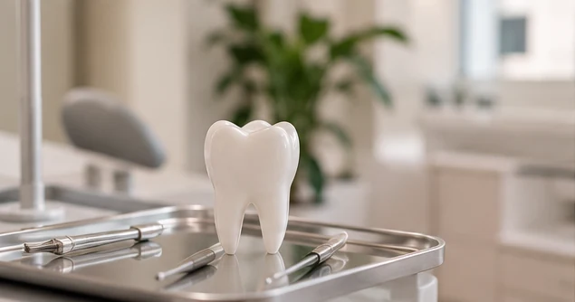

Daily care
Toothbrushing and daily oral care
How often should you brush? Basics of fluoride, technique and cleaning between teeth.
Read article →ORAL HEALTH
Ten practical articles covering prevention, daily care and common concerns.

How often should you brush? Basics of fluoride, technique and cleaning between teeth.
Read article →
Why gums may bleed, signs to watch for and everyday care.
Read article →Understanding tooth decay, fluoride and eating habits.
Read article →How to clean between teeth and choose appropriate tools.
Read article →Understanding sensitivity to cold, heat and sweet foods.
Read article →Care from the first tooth, fluoride toothpaste and parental help.
Read article →Gum changes, nausea and daily dental care during pregnancy.
Read article →Possible causes of toothache and symptoms needing prompt attention.
Read article →
The purpose of check-ups and why intervals vary.
Read article →Monday–Saturday · 10:00–18:00